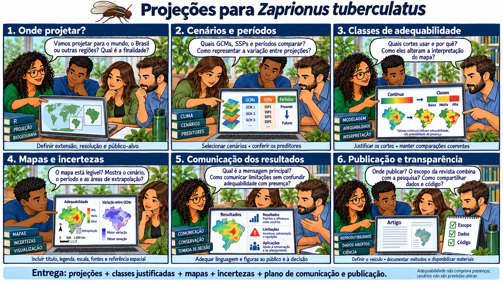

CAPÍTULO 14 · P · Prediction
Aplicar o modelo no presente e no futuro
A equipe usa o ajuste final, confere as entradas e acompanha os cenários previstos no roteiro.
Base no curso: slides 429–458.
A equipe prepara o mapa para o Brasil e abre os cenários futuros. Na legenda, deixa explícito que se trata de adequabilidade potencial. O próximo passo é conferir quais camadas entram e quais hipóteses permanecem fixas.

A superfície de referência
ens.predict.W <- sdm_predict(
models = ens.fit.model, pred = predictors.model,
con_thr = FALSE, clamp = TRUE, pred_type = "cloglog"
)O grupo confere nomes, ordem, unidades e geometria das camadas. Recortar um mapa já previsto não é o mesmo que recalcular com outro conjunto climático. O modelo só recebe as entradas que estão nos preditores selecionados.
Como os cortes são calculados
MTP <- min(presence.points.prob$Suitability)
MTP10 <- as.numeric(quantile(presence.points.prob$Suitability, 0.10, type = 1))
ens.median <- median(presence.points.prob$Suitability)MTP e MTP10 usam as predições nas presenças de calibração. A equipe mantém essa base identificada e não confunde os cortes do mapa final com as métricas das partições. A escolha do limiar muda o balanço entre omissão e classificação positiva dos contrastes.
Novidade ambiental no Brasil
model.predict.extrapolation.BR <- extra_eval(
training_data = data.model, pr_ab = "pr_ab",
projection_data = crop(predictors.model, mask.BR, mask = TRUE),
metric = "mahalanobis"
)Esse diagnóstico procura condições ambientais diferentes das usadas como referência. O clamping ativo na predição não substitui sua leitura. Ao comunicar o mapa, a equipe identifica as áreas em que a transferência exige maior cautela, conforme o diagnóstico calculado.
Os cenários que estão ativos
CMIP6.models <- c("MIROC6", "MRI-ESM2-0")
CMIP6.ssps <- c("245", "370")
CMIP6.times <- c("2061-2080")O script projeta o modelo ajustado em cada conjunto climático, combina as projeções dos GCMs por média aritmética e calcula a dispersão entre elas. A comparação entre esses GCMs é uma componente da incerteza, não uma medida de todas as fontes de variação do estudo.
evaluate.future.extrapolation <- FALSESe a equipe decidir ativar essa opção, deverá executar o bloco e examinar as saídas correspondentes. As demais hipóteses permanecem explícitas: preditores sem projeção climática ficam constantes e não há restrição de dispersão. Ganho de adequabilidade não significa colonização demonstrada.
Comparar os mapas com o mesmo critério
future.threshold <- th
future.breaks <- ens.predict.W.classes$brksAs tabelas finais distinguem área das classes e área total considerada adequada. Esta última se repete entre as linhas de classes e não deve ser somada novamente. A equipe confere essa estrutura antes de levar percentuais para o artigo.